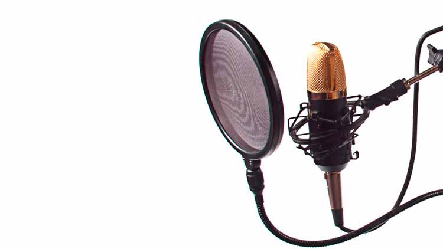
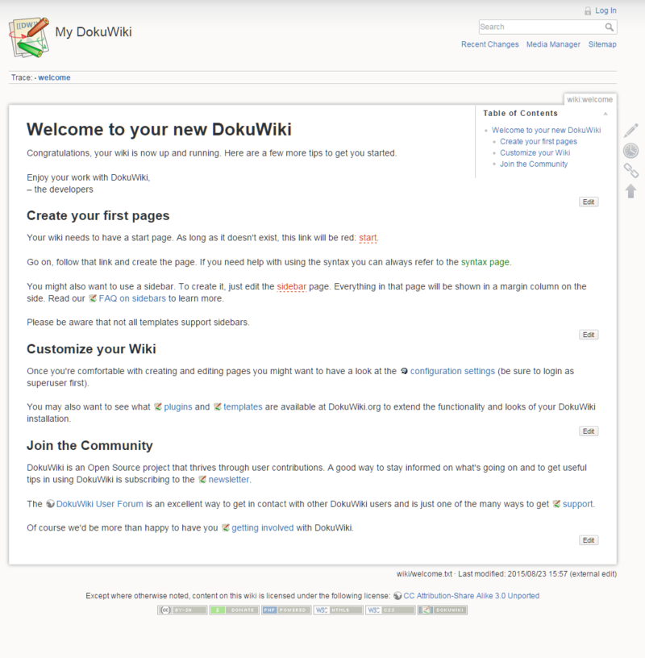
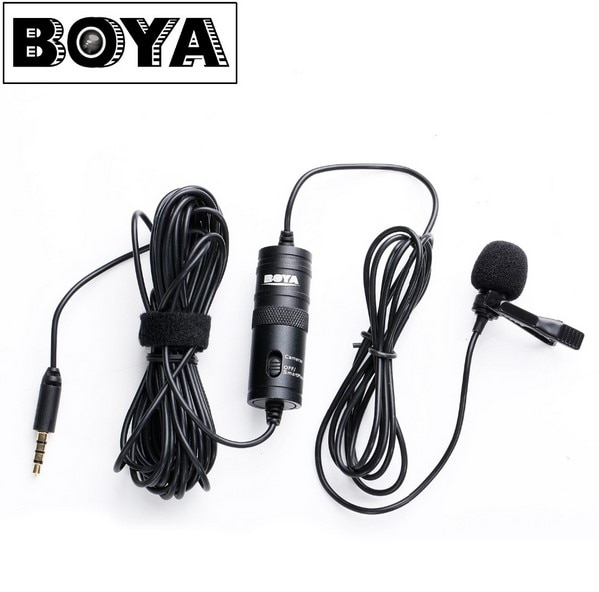
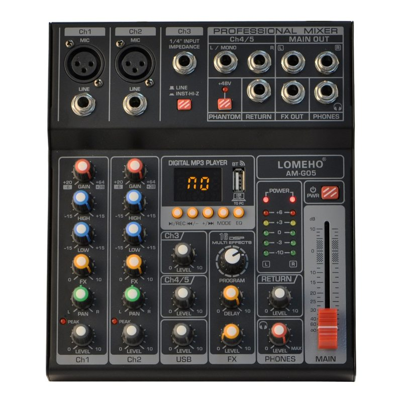
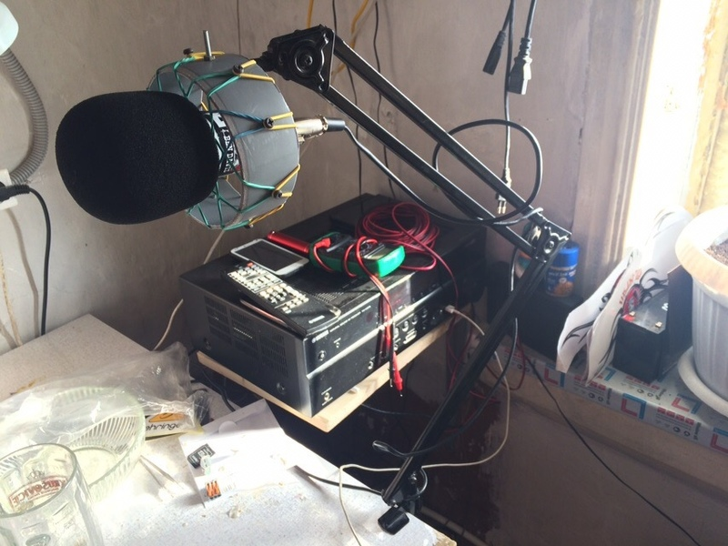

Про запись подкастов, оборудование и ошибки начинающего

Вы когда-нибудь задумывались о том, насколько хорошо вы владеете собственными речью и голосом? Я раньше не особо, но когда я слышал свой голос на записи, мне он абсолютно не нравился. Совершенно. Возможно дело в том, что я всю свою жизнь картавлю, но довольно успешно маскирую своё неумение говорить букву "Р", имитируя её при помощи голосовых связок, а не движения языка. В принципе, я могу произнести любое слово одновременно с непрерывающейся картавой буквой "Р" - такая вот суперспособность сомнительной полезности. А ещё после участия в подкастах я начал слышать то, чего никогда не слышал или не замечал раньше.
Дефекты речи и дикции
В каждом втором видео на ютьюбе я слышу фоновый шум, о существовании которого я раньше и не подозревал. Ещё я обнаружил, что совершенно не умею дышать и мне было довольно странно узнать об этом в 33 года, тем более учитывая то, что когда-то я довольно успешно занимался вокалом. Тем не менее, после конца фразы я судорожно хватаю воздух, будто утопающий, появившийся на секунду над поверхностью воды и это отлично слышно на записи. Как выяснилось, я не один такой и во множестве подкастов и тех же видео на ютьюбе эти участки просто вырезают. Теперь это мне ужасно "режет ухо", если можно так выразиться, поэтому в своей дорожке для подкаста я данные участки лимитировал или убирал с помощью fade in/fade out в зависимости от ситуации. Также к категории вещей, которые не замечаешь, относятся всякие причмокивания, "эканье/мэканье", заполняющее эфир в процессе поиска подходящих слов и тому подобное. Одним словом, сказать, что мне есть над чем работать - ничего не сказать. Но это как ни странно, мотивирует.
Ошибка с ударением
Помимо проблем с речью, столкнулся с другой проблемой - уже после записи подкаста обнаружил, что название троичного компьютера, которое я произносил как "сетУнь", на самом деле должно произноситься с ударением на первый слог, то есть, "сЕтунь", но было уже поздно. Поэтому в следующий раз при подготовке к подкасту любое название чего-либо желательно проверить через википедию, там обычно указаны ударения.
Повороты головы и источники информации
Есть такое понятие, как диаграмма направленности микрофона. От этого зависит, с какой стороны микрофона вас будет слышно лучше, с какой - хуже и насколько. То есть, если вы располагаете источник информации, которая вам нужна прямо перед собой и говорите в микрофон, то никаких особых проблем скорее всего не будет. Но при участии в прошлых подкастах я распечатал необходимое на бумаге и разложил одиннадцать листов формата А4 перед собой на диване. А так как поиск в них приходилось производить зачастую прямо в процессе записи, неизбежно приходилось поворачивать голову, а это влияло на уровень сигнала. На записи это звучит так, будто вы внезапно отбежали на пару - тройку метров от собеседника а затем так же внезапно вернулись. К тому же шуршание листов отлично слышно на записи. А если оно происходит на протяжении чего-то монолога, то вырезать его уже практически нереально (ну или я пока просто не умею делать подобную магию).

При подготовке к последнему подкасту, я развернул себе DokuWiki и вывел всю информацию на большой телевизор перед собой. Как ни удивительно, DokuWiki оказалась крайне удобна для подготовки и структурирования материала к подкасту. Во-первых, что немаловажно, у вас сразу автоматически формируется оглавление, а во-вторых, можно удобно отредактировать каждый отдельный абзац, не путаясь в километровом тексте.
В случае использования компьютера в качестве источника информации важно иметь под рукой тихую клавиатуру с большим удобным тачпадом, иначе скроллинг километровой портянки текста превратится в крайне неприятную процедуру. Особенно, если вам нужно что-то найти срочно. Самым подходящим вариантом из того, что у меня было, оказалась Microsoft All-In-One multimedia keyboard. Тачпад у неё оказался действительно удобным, но отсутствие кнопок PgUp/PgDown/Home/End осложняло задачу навигации по материалу. Я уже когда-то писал более подробно об этой клавиатуре в числе прочего в этом посте.
Интонации и темп
Так же, как текст, не разбитый на абзацы, речь, не снабжённая достаточным количеством и глубиной интонаций, воспринимается очень плохо. Сливается в один поток, становится какой-то неживой. И это одна из тех вещей, над которыми нужно работать особенно много. И особенно в тех случаях, когда речь читается с листа. А если к этому добавить ещё и немного ускоренный темп, то можно считать, что ваши усилия напрасны. Слушать это никто не будет. Вот именно так мне и кажется, когда я переслушиваю последний подкаст. Я об этом раньше не задумывался, но скорость речи должна быть обратно пропорциональна сложности материала. Сложность материала - опять же, относительное понятие. Её уровень для разных людей может отличаться очень существенно. Из этого вытекает следующий пункт, которым я в последний раз пренебрёг.
Тренируйтесь на кошках человеках
Чтобы понять, сколько времени займёт ваша речь, насколько она понятна и интересна неподготовленному человеку, зачитайте её кому-нибудь из родных/близких, кого сможете заставить это выслушать. Справедливости ради стОит заметить, что любимая жена сама предложила мне свою помощь в этом, но я был поглощён постоянной правкой текста и на зачитывание времени уже не оставалось.
Возможные вопросы
Если это не монолог, то вполне вероятно, что вам будут задавать вопросы. Самое интересное, что к ним необходимо готовиться ещё до того, как их зададут и не зная, что конкретно у вас могут спросить. Поэтому помимо чтения собственного текста необходимо ещё и изучить предметную область материала, который вы озвучиваете. Нелишним будет спросить у тех, кому вы предварительно зачитали свой материал, что им показалось непонятным, нелогичным и какие вопросы возникли у них. Вообще желательно завести отдельный список возможных вопросов и под каждым оставить ключевые слова или факты, которые вам помогут при ответе на вопрос.
Подготовка
Когда весной 2018-го года я поучаствовал с докладом, посвящённым теме умного дома в двух выпусках подкаста "Опытные на кухне", то свою дорожку я писал на телефон, поэтому качество в принципе оставляло желать лучшего. Ребята, сводившие подкаст, поработали шумодавом и из-за плохого соотношения сигнал/шум на оригинальной дорожке, после зачистки фонового шума мой голос стал звучать так, будто я пошёл по стопам Диогена и решил поучаствовать в подкасте, сидя в бочке.
И вот, примерно полтора месяца назад меня позвали в тот же подкаст снова. Мне тогда захотелось сделать всё возможное (в рамках разумного, конечно), что от меня могло зависеть для того, чтобы поднять планку качества звука, причём пришлось это делать в сжатые сроки. Я начал изучать различные аспекты звукозаписи, но параллельно нужно было изучить массу материала и подготовить сам контент, а время на это оставалось только на выходных. В итоге два полных выходных и ещё половина третьего (около 20 часов) у меня ушли на подготовку контента.
Работу над качеством записи пришлось оставить на последние выходные, а поскольку заказывать какое-либо новое оборудование из Китая было бессмысленно с учётом скорости доставки, я начал с изучения матчасти. Пересмотрел множество видео и перечитал массу обзоров микрофонов, записывающих устройств и приложений с целью поиска того, что можно было бы за разумную цену приобрести на месте. И вот, мне улыбнулась удача - в четверг я обнаружил на авито подходящий микрофон - BM-800, он же BM-8000. Это дешёвый конденсаторный микрофон с XLR разъёмом, средняя стоимость которого на али от 12 до 15 долларов. Это было большой удачей, потому что продавец отдавал его за 700 рублей. Было одно неудобство - продавец находился в Закамске, а это примерно час на автобусе в одну сторону и час в другую. Написал, договорились о встрече, на следующее утро я встал на пару часов раньше и отправился на место встречи.
По прибытии оказалось, что продавец не в сети, абонент - не абонент, а поиск со смартфона в контакте по имени, фамилии и аватарке выдал аккаунт школьника. На улице было не так уж холодно, но и не май месяц. Я звонил и писал с периодичностью в 5 минут. За полчаса локальных перемещений я вытоптал в снегу траншею вдоль всего многоквартирного дома и уже был готов уходить ни с чем, как вдруг парень появился в сети. Ценный совет - узнавайте номер квартиры заранее, чтобы избежать подобных ситуаций.
Став счастливым обладателем Китайского конденсаторного (как я изначально считал) микрофона, я из Закамска переместился в Заостровку, на обратном пути купив дешёвую звуковую карту и едва успев застать второго продавца.
Вечером после работы я начал экспериментировать. По нескольким видео на ютьюбе я знал, что подобная дешёвая звуковая карта способна выдавать "на редкость чистый для её цены сигнал". Видимо, мне в этом отношении не повезло абсолютно. Запись фонового шума абсолютно не порадовала своей громкостью. Выложить 150 долларов за какую-нибудь Focusrite Scarlett 2i2 я позволить себе не мог, поэтому пришлось договориться со своим другом (спасибо тебе, Алексей), у которого я одолжил его внешнюю звуковую карту производства фирмы Orico. Для этого тоже пришлось съездить на другой конец города.
Эксперименты продолжились с новой силой. В итоге у меня было три внешних звуковых карты, пять андроид девайсов, два ноутбука, неттоп, пара старых дешёвых динамических компьютерных микрофона, один электретный и множество различных проводов всех форматов и расцветок. Я знал, что рано или поздно я перейду на это дерьмо.
Первое, что мне нужно было выяснить, на каком девайсе будет наилучшее соотношение "сигнал/шум". Я сделал самое простое и логичное, что я мог сделать в этой ситуации - я записывал тишину. Тишину на внутренние микрофоны, на микрофон гарнитуры A4 Tech M550, на подключенный через кабель XLR-3.5mm jack микрофон BM-800 и на старые динамические микрофоны. Довольно быстро мне стало понятно, что старые микрофоны не годятся, так же, как и встроенные в ноутбук и неттоп - уровень фонового шума на них достигал 45 децибел тогда как уровень полезного сигнала - всего около 65 при размеренной речи. Слушать запись было просто мучительно из-за заметного громкого шипения в фоне. Андроид планшеты тоже быстро вышли в аутсайдеры, хотя я и не ожидал, что они могут оказаться хороши в качестве рекордеров. Старый Xiaomi Mi4 выдал около 25дб, что тоже довольно много. А вот Xiaomi Redmi Note 4X и мой текущий One Plus 5T неожиданно порадовали.
В итоге я решил использовать Xiaomi Redmi Note 4X в качестве бекап рекордера и просто положил его рядом с собой. OnePlus 5T я планировал использовать в качестве основного записывающего устройства со внешним микрофоном, но впоследствии отказался от этого.
Для записи на андроид устройствах я использовал вот это приложение.
Результат можно услышать тут.
Так же в числе прочего обнаружил вот это видео, которое могу люто рекомендовать к просмотру тем, кто не знает, с чего начать.
Планы на будущее и аппаратура
После того, как подкаст был записан и я счастливо выдохнул, мне как ни странно, захотелось записать что-то ещё. Например, создать собственный подкаст, в котором озвучивать небольшие рассказы. Например, со http://smartfiction.ru. Я уже писал об этом ресурсе в конце этого поста. Или зачитывать новости мира Linux. Или просто играть в "Акына", действуя по принципу "что вижу - то пою". Вдохновляют многие из тех, кого я постоянно слушаю. В основном - умпутун, конечно.

Сказано - сделано. Начал искать подходящее устройство. Заказал из китая Boya BY-M1 в качестве микрофона для создания бекап записи. Все очень хвалят и советуют, микрофон имеет встроенный предусилитель на батарейке и переключатель распиновки разъёма, что позволяет подключить его как к камерам, так и к любому смартфону. Да и качество записи приятно удивляет большинство из тех, кто пробовал с ним работать. Завтра заберу на почте и буду экспериментировать.

Затем я заказал вот такой микшер. Он подкупил меня своим функционалом. Кратко приведу характеристики:
- Два XLR разъёма с поддержкой отключаемого фантомного питания, либо два jack + высокоимпедансный вход/line-in + два входа jack.
- 16 эффектов, на первые два канала есть отдельные ручки fx.
- Двусторонний USB аудиоинтерфейс - есть возможность производить запись через USB, воспроизводить фоновую музыку с компьютера, отдельная ручка на уровень присутствует. При подключении к компьютеру кнопки на панели микшера работают в качестве play/pause, next, prev для плеера на компе.
- Возможность проигрывания фоновой музыки или других звуков с телефона при подключении по bluetooth.
- Возможность воспроизведения mp3 треков с usb флешки.
- Возможность бекап записи в mp3 на подключенную usb флешку.
Но с микшером меня ждало два неприятных сюрприза. Во-первых, не смотря на то, что микшер был хорошо упакован, на нём была обнаружена небольшая вмятина. В глаза не особо бросается, но в любом случае неприятно получить новую вещь с уже существующим изъяном. И во-вторых, при подключении по USB к линуксовым машинам, запись прерывается примерно два раза в секунду на небольшие отрезки времени. Но это потом прекрасно слышно как некие то ли тихие щелчки, то ли заикания. Возможно, это проблема подсистемы ALSA, хороший друг посоветовал поставить JACKD сервер и попробовать что-нибудь записать с его помощью. Так же данная проблема может быть связана с тем, что частота работы системы 44кГц, а микшера - 48кГц (я лично в этом сомневаюсь), но тоже попробую проверить в скором времени. Пока что выложил микшер на авито и юлу. Думаю продать и взять себе либо аудиоинтерфейс, либо USB микшер от Behringer, потому что аналогичные решения от Focusrite слишком дороги. Вариантов несколько, пока наиболее предпочтительным является первый:
- BEHRINGER UMC204HD - внешняя звуковая карта USB
- BEHRINGER UMC202HD - внешняя звуковая карта USB
- BEHRINGER UMC22 - внешняя звуковая карта USB
- BEHRINGER XENYX QX1002USB - микшер с USB интерфейсом
- BEHRINGER XENYX QX1202USB - микшер с USB интерфейсом
Что самое забавное - вчера внезапно оказалось, что ещё один мой знакомый, увлекающийся линуксом, тоже дома записывает книги. И, что самое удивительное, он себе приобрёл именно один из тех вариантов, на которые я заглядываюсь - BEHRINGER XENYX QX1202USB. С одной стороны отличный микшер, а с другой посмотрите только на эту гениальную реализацию паука и микрофонного держателя из куска канализационной пластиковой трубы и ноги от лампы, купленной за 100р. на авито!

Что-ж, буду изыскивать средства на новый микшер, пытаться продать текущий и изучать материал, представленный в этом подкасте.